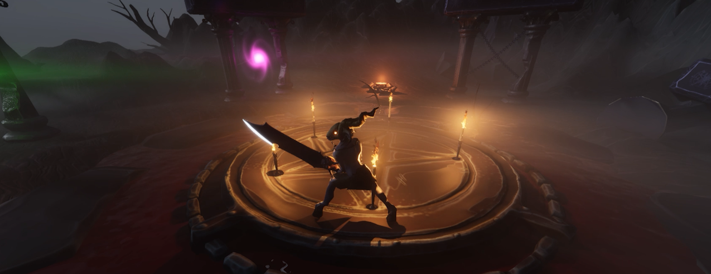

Upgrade / Skill Tree
Goal. Data-driven progression that designers can author without code changes. All stat modifiers are resolved in one aggregation pass for clarity and balance tuning.
Design Summary
- SkillNode (ScriptableObject): Name, description, icon, stat type, per-level percentage, cost array, GUID, editor position.
- Custom Editor Window: Create nodes, rename assets, drag to position, connect prerequisites, edit costs and properties.
- Runtime UI (SkillButton): Shows name, cost, level; disables when unaffordable or maxed; applies upgrade on click.
- Player Stats Integration: One method recalculates all stats by aggregating unlocked node modifiers.
Data Model
SkillNode.skillCost : int[]SkillNode.currentLevel : intSkillNode.skillTypePositive : enumSkillNode.percentageIncrease : floatSkillNode.SkillID : string (GUID)- Optional authoring fields kept even if gating is disabled:
prerequisites,requiredPrerequisitePoints.

Authoring Workflow
- Create a new SkillNode asset in the editor.
- Fill in display fields and costs. Costs define the number of levels.
- Optionally connect prerequisites in the editor for visual planning.
- Designers place nodes visually; code reads them by GUID at runtime.
Runtime Flow
- UI reads SkillNode data and renders button state.
- On click: deduct cost, increment
currentLevel, request stat recompute. ApplyUpgrades()scans all nodes, sums per-type modifiers, writes final values to the player, and updates bars.

Key Snippet
// aggregate modifiers
foreach (var n in _skillNodes)
if (n.currentLevel > 0)
upgrades[n.skillTypePositive] =
upgrades.GetValueOrDefault(n.skillTypePositive, 0f)
+ n.percentageIncrease * n.currentLevel;
// apply
switch (type)
{
case SkillTypes.MaximumHealth:
_maxHealth = _baseMaxHealth * (1 + upgrades[type]);
_currentHealth = _maxHealth;
break;
case SkillTypes.AttackDamage:
_attackModifier = _baseAttackModifier + upgrades[type];
break;
// other stats similar
}UI Behavior
- Button text shows
Cost: <current>orMax Level. - Interactable only when player currency ≥ current cost and not maxed.
- After purchase, UI refreshes all buttons to reflect new affordability and caps.

Extensibility
- Add a new stat: extend the enum and the switch in
ApplyUpgrades(). - Add a new skill: create a SkillNode asset and set fields. No code changes.
- Save/load already covered via GUID-keyed entries in GameData.
Edge Cases Handled
- Costs exhausted → level locks at max and displays “Max Level”.
- Missing designer data defaults to safe values.
- Aggregation order is irrelevant; all modifiers are additive in one pass.
What Was Implemented
- SkillNode ScriptableObject definition and GUID generation.
- Custom Skill Tree Editor window and node linking UX.
- SkillButton runtime logic and currency gating.
- Player stat aggregation in
ApplyUpgrades()with immediate HUD updates.
Player Stats Integration
ApplyUpgrades() is the single aggregation point. It scans all SkillNodes, sums per-type modifiers, then writes final values to the player. Complexity is O(n) in node count and order-independent.
public void ApplyUpgrades()
{
var upgrades = new Dictionary<SkillTypes, float>();
foreach (var node in _skillNodes)
if (node.currentLevel > 0)
upgrades[node.skillTypePositive] =
upgrades.GetValueOrDefault(node.skillTypePositive, 0f)
+ node.percentageIncrease * node.currentLevel;
foreach (var type in upgrades.Keys)
{
switch (type)
{
case SkillTypes.AttackDamage:
_attackModifier = _baseAttackModifier + upgrades[type]; break;
case SkillTypes.MaximumHealth:
_maxHealth = _baseMaxHealth * (1 + upgrades[type]);
_currentHealth = _maxHealth; break;
case SkillTypes.BloodlettingRegenerationRate:
_bloodlettingRegenerationRate = _baseBloodlettingRegenerationRate + upgrades[type]; break;
case SkillTypes.HealthCostOfUsingTheSword:
_healthCostOfUsingTheSword = _baseHealthCostOfUsingTheSword - upgrades[type]; break;
case SkillTypes.BloodlettingGainPerAttack:
_bloodlettingGainPerAttack = _baseBloodlettingGainPerAttack + upgrades[type]; break;
}
}
}Notes:
- New stats require adding one enum value and one switch case.
- Negative modifiers are trivial to re-enable if design needs trade-offs.
Save/Load Architecture
Goal. Create a persistence system that any feature could use without requiring changes to the core code. Saves needed to be human-readable for debugging, but still allowed a simple obfuscation pass if desired.
Key Contributions
Player Upgrade / Skill Tree System
- Built a skill-tree progression system using ScriptableObjects to define skill nodes and stat modifications.
- Developed a custom Unity Editor tool to visually create, position, and connect skill nodes.
- Integrated upgrades with the player’s stat calculation to dynamically adjust health, damage, regeneration, and resource costs.
Save System
- Created a modular save/load architecture using an ISave interface so new systems can be added without modifying the SaveManager.
- Implemented a FileDataHandler to serialize GameData into JSON, with optional XOR-based encryption.
- Ensured persistence of currency, skill progress, and other player-related data across sessions.
Design Summary
- ISave interface: Any component that implements
LoadData(GameData)andSaveData(ref GameData)is automatically included in the save/load process. This allows features to opt-in without modifying any central system. - SaveManager. Singleton that, at startup it finds all ISave components in the scene (active and inactive) and coordinates Save, Load, and NewGame. It acts as the single entry point for all persistence.
- FileDataHandler. Serializes the GameData object into JSON and writes it to disk, with an optional XOR-based encryption step. Creates directories if needed and handles read/write safety.
- GameData. A flat data container. Uses SerializableDictionary for storing state keyed by unique IDs, such as skill levels or world progress flags.

Flow
- Load
The SaveManager asks FileDataHandler to readsaveData.json.- If no save exists, it generates a new GameData, saves once, then loads it.
- After loading, it distributes the data back into all ISave components.
- Save
The SaveManager asks every ISave component to write its state into GameData, then FileDataHandler serializes the result to disk.
Extensibility in Practice
The system was designed so others could add persistent features without modifying any of my code. This worked in production: another programmer later added portal unlock state by simply implementing ISave and storing values in GameData. No changes to SaveManager or the file layer were required.
Data Stored
bloodExperience— player currencyskillTree(string → int) — saved level of each skill, keyed by unique GUIDportalsUnlocked(string → bool) — world state added later by another team member
Key Snippet
public void SaveGame()
{
foreach (ISave s in _saveComponents)
s.SaveData(ref _gameData);
_fileDataHandler.Save(_gameData, selectedProfileID);
}
public void LoadGame()
{
_gameData = _fileDataHandler.Load(selectedProfileID);
if (_gameData == null) { NewGame(); return; }
foreach (ISave s in _saveComponents)
s.LoadData(_gameData);
}Why It Scales
- New features only need to implement ISave and store data in GameData.
- No changes required to SaveManager as the project grows.
- JSON files can be inspected quickly during development.
- Optional encryption is available if tampering is a concern.
Skill Tree Persistence
Skill levels are saved by GUID and restored on load, then ApplyUpgrades() recalculates stats.
public void LoadData(GameData data)
{
LoadAllSkillNodes();
_skillNodes.ForEach(n => n.currentLevel = 0);
foreach (var n in _skillNodes)
if (data.skillTree.TryGetValue(n.SkillID, out int lvl))
n.currentLevel = lvl;
ApplyUpgrades();
}
public void SaveData(ref GameData data)
{
bool newGame = data.skillTree == null || data.skillTree.Count == 0;
data.skillTree = new SerializableDictionary<string, int>();
if (_skillNodes.Count == 0) LoadAllSkillNodes();
foreach (var n in _skillNodes)
data.skillTree.Add(n.SkillID, newGame ? 0 : n.currentLevel);
}